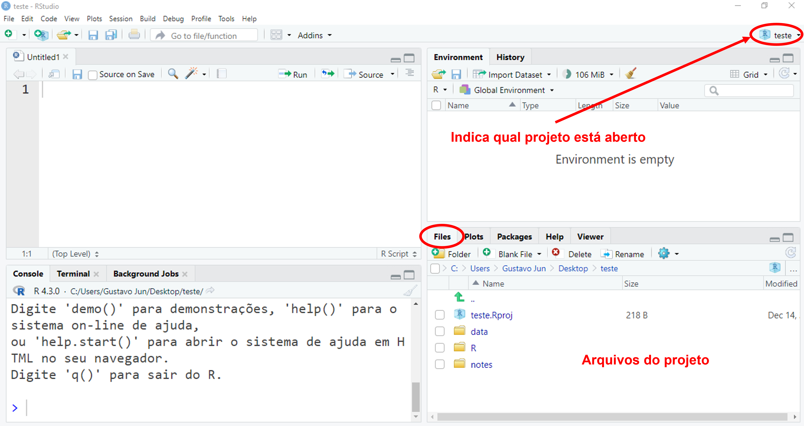
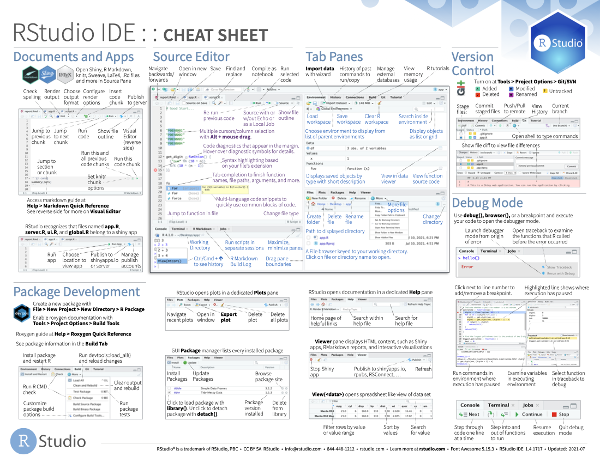

2 R / RStudio
Tendo em vista as bases que definem um cientista de dados e as etapas que compõem seu trabalho, entraremos no âmbito da programação, conhecendo um pouco mais sobre o R, o RStudio e suas ferramentas aplicadas à ciência de dados.
2.1 Conhecendo o R e o RStudio
O R é uma das linguagens de programação mais utilizadas por cientistas de dados. Foi desenvolvido por Ross Ihaka e Robert Gentleman, na Universidade de Auckland, Nova Zelândia, em 1993. Iniciou como uma linguagem focada em programação estatística, mas que, ao longo do tempo, tornou-se cada vez mais encorpada e diversificada. Atualmente, o R Development Core Team atua na manutenção e no desenvolvimento da linguagem, sendo composto por diversos colaboradores.
Por ser um software gratuito de código aberto (open source), possibilitou a formação de uma comunidade que atua diretamente em seu desenvolvimento, promovendo constantes facilidades, melhorias e inovações acessíveis ao público em geral. O compartilhamento de um conjunto de funcionalidades é dado através de pacotes, os quais devemos instalar para utilizá-las. Detalharemos a instalação de pacotes na Seção 2.3.
E, justamente, uma das principais contribuições idealizadas é o RStudio. O RStudio é uma IDE (Integrated Development Environment), ou seja, um ambiente de trabalho que executa o R a partir de uma interface gráfica mais agradável e com diversas funcionalidades (Figura 2.2), o que nos proporciona um maior conforto quando comparado ao R original, composto basicamente pelas janelas de script e console (Figura 2.1).
Mais adiante, na Seção 2.2, entraremos em mais detalhes sobre o ambiente do RStudio.
Vale salientar que o R pode ser utilizado sem o RStudio, porém o RStudio não funciona sem o R. No nosso caso, utilizaremos o RStudio para desenvolver nossas análises. Assim, precisamos ter instalados ambos os programas.
2.1.1 Instalando o R
O R está disponível para todos os sistemas operacionais. Sua instalação é feita via CRAN (Comprehensive R Archive Network), ou seja, uma rede com diversos servidores localizados em várias regiões do mundo que armazenam versões idênticas e atualizadas de códigos e documentações para o R. Assim, para instalar o R, recomenda-se selecionar o servidor mais próximo à sua região. A seguir está o passo-a-passo para o download.
Acessar: https://www.r-project.org/;
No canto superior esquerdo, clicar em CRAN;
Selecionar o servidor (mirror) mais próximo a você;
Em Download and Install R escolha o link referente ao seu sistema operacional;
Sistemas operacionais:
Windows: após clicar em ‘Download R for Windows’, selecione a opção ‘base’ e, posteriormente, ‘Download R x.x.x for Windows’, sendo ‘x.x.x’ a versão mais recente a ser baixada;
Linux: após clicar em ‘Download R for Linux’, selecione a distribuição que você utiliza e siga as instruções da página para instalar o R;
MacOS: após clicar em ‘Download R for macOS’, selecione a opção mais recente do R, a partir do link ‘R-x.x.x.pkg’, sendo ‘x.x.x’ a versão mais recente a ser baixada;
- Feito o download, abra o arquivo baixado e siga as instruções para a instalação. Uma vez que utilizaremos o R a partir do RStudio, não há necessidade de criar um ícone de inicialização do R na área de trabalho, portanto, apenas instale o R em seu computador.
2.1.2 Instalando o RStudio
Uma vez feita a instalação do R, precisamos instalar o RStudio. Também está disponível para todos os sistemas operacionais e sua instalação pode ser feita a partir do link: https://posit.co/download/rstudio-desktop/.
Escolha a versão referente ao seu sistema operacional (Figura 2.3) e siga as instruções para baixar a IDE em seu computador.
2.1.3 Atualizando o R e o RStudio
O R passa por algumas atualizações durante o ano. A maneira mais simples de verificar novas atualizações é pelo mesmo site em que realizamos o seu download. Para atualizar o R, será necessário instalá-lo novamente, realizando o mesmo processo descrito na Seção 2.1.1.
De maneira geral, as atualizações visam corrigir falhas e melhorar o desempenho do programa. Contudo, são mudanças ligeiras que não interferem muito no seu uso cotidiano. Assim, recomendo que atualize o R anualmente ou quando notar algum problema que não consiga explicar.
Assim como o R, o RStudio passa por constantes melhorias. Quando é lançada uma nova atualização, ao inicializar uma nova seção, o RStudio nos informa sobre a sua disponibilidade, como ilustrado na Figura 2.4.
Selecionando a opção Quit and Download…, o RStudio é fechado e será aberto em seu navegador o mesmo site em que realizamos a instalação do RStudio. Para atualizá-lo, devemos instalar novamente o RStudio, realizando o mesmo processo descrito na Seção 2.1.2.
Recomendo realizar a atualização do RStudio semestralmente ou quando notar algum problema.
2.2 Ambiente RStudio
Agora que temos o R e o RStudio instalados, vamos conhecer mais sobre o ambiente do RStudio.
2.2.1 Janelas
A Figura 2.5 ilustra as quatro janelas presentes no RStudio, cada qual com suas particularidades e funções. A seguir, apresentaremos as principais funcionalidades de cada janela.
Script: é a janela na qual escreveremos os códigos e comandos, podendo ser editado e salvo. Para abrir um novo script, clicamos no ícone logo abaixo da aba file, no canto superior esquerdo, e em seguida em R Script ou podemos utilizar o atalho
Ctrl + Shift + N(Cmd + Shift + N);Console: local onde são apresentadas as saídas e resultados dos códigos e comandos redigidos no script. Também podemos escrever comandos no console, porém, ao contrário do script, não é possível editar ou salvar, sendo necessário reescrevê-los, caso preciso.
Environment: onde se localiza e armazena os objetos criados. O ícone da vassoura exclui os objetos desejados. Esta janela contém outras abas, porém a Environment é a principal.
File, Plots, Packages, Help, Viewer: esta janela contém cinco abas.
File: mostra os arquivos presentes no diretório do seu computador;
Plots: permite a visualização dos gráficos gerados;
Packages: mostra todos os pacotes instalados em seu RStudio;
Help: retorna documentações detalhadas sobre diversas funcionalidades;
Viewer: apresenta os resultados gerados a partir do R Markdown, Bookdown, Quarto, dentre outras extensões relacionadas a execução de relatórios e apresentações.
A princípio, pode parecer complexo o uso das janelas do RStudio, dada às suas variadas possibilidades e funcionalidades. Porém, com o tempo e experiência, cada janela terá sua importância justificada.
2.2.2 Aparência
Para dar um toque pessoal e melhorar a experiência de uso do RStudio, podemos alterar sua aparência. Para isso, acessamos a aba Tools, presente no menu superior e clicamos em Global Options.... Na aba Appearance, podemos alterar o tema de fundo, regular o zoom do ambiente como um todo ou somente dos textos, além de modificar a fonte dos textos. Na Figura 2.6 está ilustrado um exemplo de configuração da aparência do RStudio e na Figura 2.7, o resultado dessa alteração.
No mesmo local, também podemos alterar a disposição das janelas e abas em Panel Layout.
2.2.3 Projetos
Uma funcionalidade importante do RStudio são os projetos. Ao criar um projeto, uma nova pasta é criada em seu computador. Nela, podemos (e devemos) direcionar os arquivos a serem utiilizados para o projeto, além de abrigar os novos arquivos criados para a análise.
Com isso, a criação de projetos nos proporciona uma melhor organização dos arquivos, separando-os de acordo com o projeto realizado no R. Além disso, facilita a importação de dados para dentro do R, como veremos no Capítulo 4.
Para criar um projeto, clique em File, presente no menu superior, depois em New Project.... Em seguida, clique em New Directory > New Project e nomeie seu projeto em Directory name. Em Create project as subdirectory of: escolha o diretório em seu computador (pasta) no qual seu novo projeto será alocado. Finalize clicando em Create Project. A Figura 2.9 ilustra o processo.
Pronto, seu projeto está criado. No canto superior direito aparecerá o nome do projeto. Além disso, na aba Files, estarão todos os arquivos direcionados para a pasta do projeto, incluindo o arquivo .Rproj, referente ao projeto recém criado. Portanto, direcione todos os arquivos que você utilizará para a respectiva pasta do projeto em uso.

Clicando no mesmo ícone o qual aparece o nome do projeto, podemos criar um novo, abrir um outro existente ou fechar o projeto em funcionamento. Ao reiniciar o programa, o RStudio é restaurado, automaticamente, a partir do último projeto utilizado. Por tanto, atente-se a qual projeto se encontra ativo.
Por fim, dentro do diretório do projeto, podemos criar subdiretórios, ou seja, pastas dentro da pasta do projeto. Isso nos ajuda a alocar os arquivos de acordo com sua utilidade. Por exemplo, podemos criar os seguintes subdiretórios:
dados: pasta com os dados a serem analisados;
R: pasta com os scripts do R;
notas: pasta com anotações em arquivos
.txtou.docx.
Dessa forma, quanto mais departamentalizado os arquivos, mais organizado e fácil será o seu trabalho.
2.2.4 Executando o primeiro comando
Como comentado na Seção 2.2.1, podemos executar um comando tanto no script, como no console. No script, os comandos redigidos podem ser salvos e editados, enquanto no console, não. Portanto, no console, recomenda-se executar comandos de teste ou temporários, que não interfiram, diretamente, no raciocínio ou fluxo de uma análise.
Para rodar um comando no script, utilizamos o atalho do teclado Ctrl + Enter (Cmd + Return). O resultado aparecerá no console. Como exemplo, podemos realizar uma operação matemática simples.
1 + 1
#> [1] 2Enquanto isso, no console, inserimos o comando e clicamos em Enter (Return). Novamente, o resultado aparecerá no console.
Vale destacar que, neste material, os resultados de comandos e códigos são apresentados seguidos do operador #>. O valor presente nos colchetes [1] apenas informa a linha em que começa o primeiro valor de seu resultado. Em alguns comandos cujo resultado é mais extenso, pode-se preencher mais de uma linha.
1:30
#> [1] 1 2 3 4 5 6 7 8 9 10 11 12 13 14 15 16 17 18 19 20 21 22 23 24 25
#> [26] 26 27 28 29 30No caso anterior, criamos uma sequência de números inteiros de 1 a 30, em que a saída dos resultados ocupam duas linhas. Como sempre, a primeira linha começará no primeiro valor [1] e, neste caso, a segunda linha começa no 26º valor [26].
Por fim, para salvar os códigos redigidos no script, utilizamos o atalho Ctrl + S (Cmd + S). No caso de um script recém criado, salve e coloque-o no diretório referente ao projeto em uso.
2.2.5 Comentários
Podemos inserir comentários no script, sem que estes interfiram na execução dos códigos.
Inserir comentários ao longo do script é muito importante para quem está começando, pois possibilita fazer registros para, posteriormente, revisar a utilidade de certas funcionalidades ou realizar alguma manutenção no código. Além disso é muito relevante para que se possa compartilhar um código inteligível com outras pessoas.
Para inserir um comentário, basta colocar o símbolo # antes da parte comentada.
Como visto na Figura 2.11, além de inserir um comentário no início de uma linha, também podemos realizá-lo após um comando, desde que não interfira no fluxo dos códigos.
No caso de scripts longos, podemos utilizar comentários seccionados para dividir o arquivo em partes gerenciáveis. Para criá-los, utilizamos o atalho Ctrl + Shift + R (Cmd + Shift + R).
Os comentários seccionados nos fornece um menu de navegação na parte inferior do script, além de permitir recolher uma seção ao clicar na flecha ao lado da linha da respectiva seção, como ilustra a Figura 2.12.
2.2.6 Ajuda
Cada ferramenta presente no R contém uma documentação que explica a sua utilização. Para acessarmos tais documentos, podemos prosseguir das seguintes maneiras:
?mean
help(mean)Neste exemplo, queremos saber mais sobre a função mean, ou seja, a função que calcula a média aritmética. Ao rodar um destes comandos, a documentação referente à função será aberta na aba Help. Nela, são apresentadas algumas descrições importantes, como a noção geral de seu uso, possíveis argumentos e exemplos, como ilustra a Figura 2.13.
Ainda, podemos utilizar o atalho F1 do teclado, selecionando uma ferramenta presente no script ou console e clicar em F1.
Outra via de auxílio são as folhas de cola, ou Cheatsheets. Basicamente, trazem resumos sobre as principais funcionalidades contidas em determinados pacotes. A Figura 2.14 traz um exemplo da folha de cola do RStudio. Podemos acessar outras Cheatsheets em: https://posit.co/resources/cheatsheets/.

Por fim, caso ainda tenha dúvidas, não exite em fazer uma busca no Google, encontrar tutoriais explicativos - seja no YouTube ou no próprio site do RStudio -, acessar fóruns de perguntas e respostas - como o Stack Overflow e acessar o Rseek ou o Search R-project, que são buscadores específicos para assuntos relacionados ao R.
Para mais informações sobre o RStudio, acesse o guia do usuário, disponível em: https://docs.posit.co/ide/user/.
2.3 Pacotes
Como citado no início do capítulo, o R apresenta pacotes com funcionalidades específicas que nos auxiliam em diversas tarefas. Alguns pacotes base já vêm pré-instalados juntos ao R, enquanto outros precisamos instalar para poder utilizar suas ferramentas.
2.3.1 Instalação de pacotes
Para instalar novos pacotes no R utilizamos a função install.packages().
install.packages("ggplot2")Atente-se ao fato que, para a instalação, o nome do pacote deve estar entre aspas. O processo de instalação pode demorar alguns segundos. Portanto, espere até que se complete a instalação.
Vale destacar que a instalação de um pacote precisa ser executado somente uma única vez. Dessa forma, uma vez instalado um determinado pacote, tal função não precisa ser executada novamente a cada nova seção.
Outra maneira de instalar pacotes é utilizando a aba Packages do RStudio. Para isso, clicamos em Install e colocamos o nome do pacote desejado, como ilustra a Figura 2.15.
Além disso, a aba Packages lista todos os pacotes instalados. Portanto, caso precise consultar se um pacote já está instalado em seu computador, utilize este atalho do RStudio.
2.3.2 Carregar pacotes
Uma vez instalado, para que possamos utilizar todas as suas funcionalidades, devemos carregar o pacote com a função library(). Agora, o nome do pacote não precisa estar entre aspas.
Ao contrário da função de instalação, a função library() deve ser executada a cada nova seção inicializada no R, de acordo com o pacote que se deseja utilizar.
Também temos a possibilidade de usar apenas uma única função de um pacote sem carregá-lo por completo. Para isso, utilizamos o operador :: entre o nome do pacote e o nome da função desejada.
ggplot2::ggplot()Ao utilizar esta sintaxe, o código é executado um pouco mais rápido, pois é carregada apenas a função declarada e não todas as funções presentes no respectivo pacote, como acontece quando utilizamos a library().
Assim, caso você utilize uma única ou poucas funções de um determinado pacote, ou ainda, tenha um script com muitas linhas de código, pode ser interessante utilizar o operador :: ao invés da função library(). Além disso, utilizar o :: permite identificar de qual pacote vem a função e evitar conflitos com funções de mesmo nome, oriundas de pacotes distintos.
2.3.3 Atualização de pacotes
Conforme surgem melhorias e correções, são lançadas novas atualizações de pacotes. Para atualizar um pacote no R, utilizamos a função update.packages().
update.packages("ggplot2")Bem como a instalação, podemos utilizar a aba Packages para atualizar os pacotes. Para isso, clicamos em Update e selecionamos os pacotes que desejamos atualizar. A Figura 2.16 ilustra o processo.
2.4 Pacote tidyverse
O tidyverse é um “pacote mestre” que abriga diversos outros, cada qual apresentando um conjunto de funcionalidades específicas.
A Figura 2.17 traz os principais pacotes utilizados em cada uma das etapas que compõem o trabalho em ciência de dados.
Fonte: R for Data Science, 2023 (Adaptado).
Nesta apostila, focaremos no tidyverse aplicado às etapas de Programar, Importar, Arrumar, Transformar e Visualizar. Apenas os pacotes relacionados às etapas de Modelar e Comunicar não estão presentes no tidyverse.
Assim sendo, vamos instalar e carregar o pacote tidyverse.
install.packages("tidyverse")A função library(tidyverse) nos informa que nove pacotes foram carregados: dplyr, forcats, ggplot2, lubridate, purrr, readr, stringr, tibble e tidyr.
Contudo, o tidyverse também possui outros pacotes. Para se ter uma visão geral de quais estão presentes, utilizamos a função tidyverse_packages().
tidyverse_packages()
#> [1] "broom" "conflicted" "cli" "dbplyr"
#> [5] "dplyr" "dtplyr" "forcats" "ggplot2"
#> [9] "googledrive" "googlesheets4" "haven" "hms"
#> [13] "httr" "jsonlite" "lubridate" "magrittr"
#> [17] "modelr" "pillar" "purrr" "ragg"
#> [21] "readr" "readxl" "reprex" "rlang"
#> [25] "rstudioapi" "rvest" "stringr" "tibble"
#> [29] "tidyr" "xml2" "tidyverse"Dessa forma, caso queira carregar outro pacote do tidyverse que não tenha sido carregado previamente, utilize a função library(). Para carregar mais de um pacote em um único comando library(), coloque-os dentro da função c(), separados por vírgulas.
Dentre estes pacotes, utilizaremos o readr e o readxl para importar os dados; o tidyr e o tibble para arrumar; o dplyr, stringr, forcats e lubridate para transformar; e, por último, o ggplot2 para visualizar.
Ao longo do material, utilizaremos alguns outros pacotes que não estão presentes no tidyverse, cuja instalação será realizada em momento oportuno.
Caso o leitor tenha curiosidade em saber mais detalhes sobre o tidyverse, acesse o link da página oficial do pacote: https://www.tidyverse.org/packages/.
Nos capítulos seguintes, abordaremos as etapas de Importar, Arrumar, Transformar e Visualizar, apresentando as principais utilidades e funções de cada um dos respectivos pacotes presentes no tidyverse. Mas antes, veremos alguns conceitos básicos de programação em R.